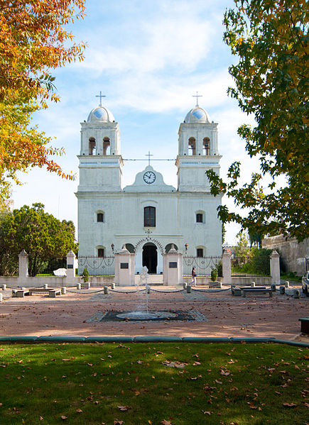

Demographics
|
Uruguayans are of predominantly European origin, with over 87.7% of the population claiming European
descent in the 2011 census. Most Uruguayans of European ancestry are descendants of 19th and
20th century immigrants from Spain and Italy, and to a lesser degree Germany, France and
Britain. Earlier settlers had migrated from Argentina. People of African descent make up
around five percent of the total. There are also important communities of Japanese.
Overall, the ethnic composition is similar to neighboring Argentine provinces as well as Southern
Brazil. |
Healthcare
|
For the first half of the twentieth century Uruguay and Argentina had the most advanced standards of
medical care in Latin America. Military rule from 1973 to 1985 adversely affected standards in
Uruguay. More resources went to military hospitals, which were open only to relatives of the members
of the armed forces. Total health care spending in 1984 was 8.1% of GDP, and this included about
7.5% of household spending but 400,000 people had neither state nor private health care coverage. In
1987 there were seven major public hospitals in Montevideo. About half the interior departments had
a hospital; the others had a centro auxiliar. Altogether there were about 9,505 hospital beds in the
public a monthly membership fee and a small co-payment payable to see a doctor or have a test. There
may be age and pre-existing condition guidelines for accepting or not accepting non-employed
members. 58.9% of the inhabitants of Montevideo were covered by mutualistas in 1971 and 11.8% had
the official health card from the Ministry of Public Health which entitled them to free health care.
16.6% had no coverage of any kind. |
Religion
|
Uruguay has no official religion; church and state are officially separated, and religious
freedom is guaranteed. A 2008 survey by the INE of Uruguay showed Catholic Christianity as the main
religion, with 45.7% – 81.4% of the population; 9.0% are non-Catholic Christians, 0.6% are
Animists or Umbandists (an Afro-Brazilian religion), and 0.4% Jewish. 30.1% reported believing in a
god, but not belonging to any religion, while 14% were atheist or agnostic. Among the sizeable
Armenian community in Montevideo, the dominant religion is Christianity, specifically Armenian
Apostolic. |
 |
LanguageUruguayan Spanish, as is the case with neighboring Argentina, employs both voseo and yeísmo (with
[ʃ] or [ʒ]). English is common in the business world and its study has risen significantly in recent
years, especially among the young. Uruguayan Portuguese is spoken as a native language by between 3%
and 15% of the Uruguayan population, in northern regions near the Brazilian border, making it the
second most spoken language of the country. As few native people exist in the population, no
indigenous languages are thought to remain in Uruguay.[149] Another spoken dialect was the Patois,
which is an Occitan dialect. The dialect was spoken mainly in the Colonia Department, where the
first pilgrims settled, in the city called La Paz. Today it is considered a dead tongue, although
some elders at the aforementioned location still practice it. There are still written tracts of the
language in the Waldensians Library (Biblioteca Valdense) in the town of Colonia Valdense, Colonia
Department. Patois speakers arrived to Uruguay from the Piedmont. Originally they were Vaudois, who
become Waldensians, giving their name to the city Colonia Valdense, which translated from the
Spanish means "Waldensian Colony". |
Education
|
Education in Uruguay is secular, free, and compulsory for 14 years, starting at the age of
4. The system is divided into six levels of education: early childhood (3–5 years); primary
(6–11 years); basic secondary (12–14 years); upper secondary (15–17 years); higher education (18 and
up); and post-graduate education. |